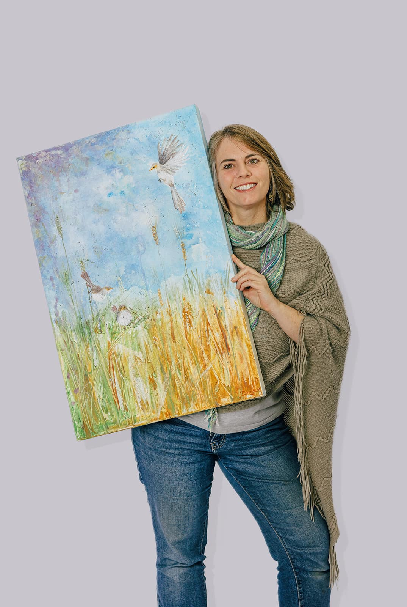
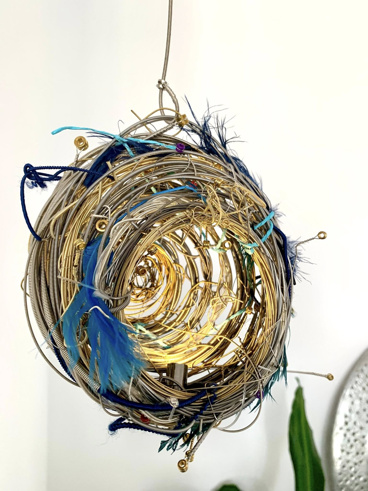
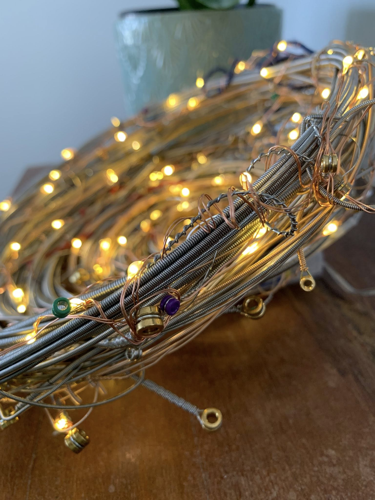

Fields of Gold
"You'll forget the sun in her jealous sky, as you walk in fields of gold".
An acrylic piece inspired by Derryth's love of rural settings and the gorgeous song covered by many artsists including Eva Cassidy and Sting.

Contact
A Splendid Bunch
Eanie "Meanie, Minie, Moe".
The Splendid Fairywren can often be found darting in and out of Derryth's artwork. These three cheekily come together as Meanie, Minie and Moe.

Contact
As The Dragon Flies
Vibrant yet Peaceful.
This fun abstract acrylic piece with texture and vibrancy. Using colour not normally used by Derryth it evokes a sense of play at Dusk.

Contact
Feels Like Home
"Feels like I'm all the way back where I belong".
A heartfelt piece and a heartfelt song, this sculpture created from recycled guitar strings, feathers and others bits and pieces represents the importance of a sense of "home".

Contact
Help from My Friends
"I get by with a little help from my friends".
The importance of social connection and love is reprensented in this piece by the lights shining throughout as people who love us an are there when we need.

Contact
Autumn Imprint
Neutrals with a pop of blue
Spot the Fairy Wrens in this piece! A piece filled with warmth and tranquility.

Contact
The Quirky Trio
"Snap, Crackle & Pop".
A quirky set of three acrylics using a variety of patterns and colours. The more you look - the more you notice.


Contact
A Splendid Bunch
"Meanie, Minie, Moe!".
The Splendid Fairy Wrens make another appearance in this sweet set of three paintings.
Contact
Life
Finding the blanace in life
Using many patterns in the leaves, this artwork focus on ways to keep balance in a world that is full of many colours and patterns.

Contact